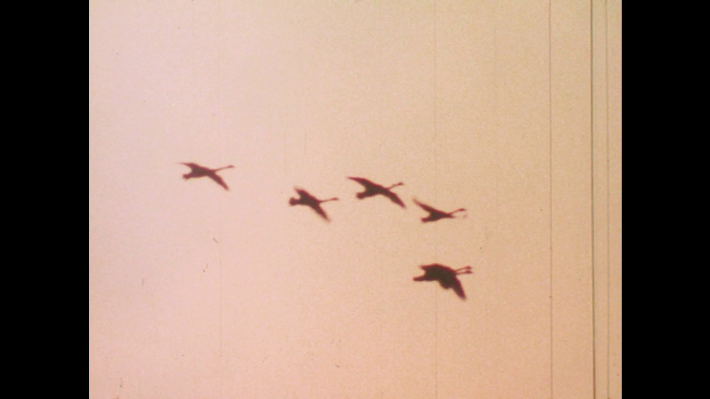

Birds did exist!
Although it may be hard to imagine, many years ago birds were in fact real. There was once a time when you could look into the sky and see birds are flying friends, but now all you see is feathery agents looking to monitor our every move.

This photo shows proof of real birds in the 1980s before birds were made extinct by the U.S. government in 2001.